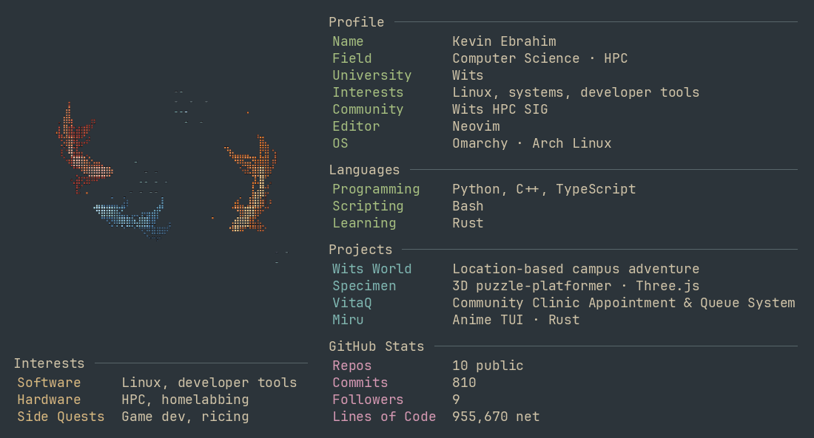
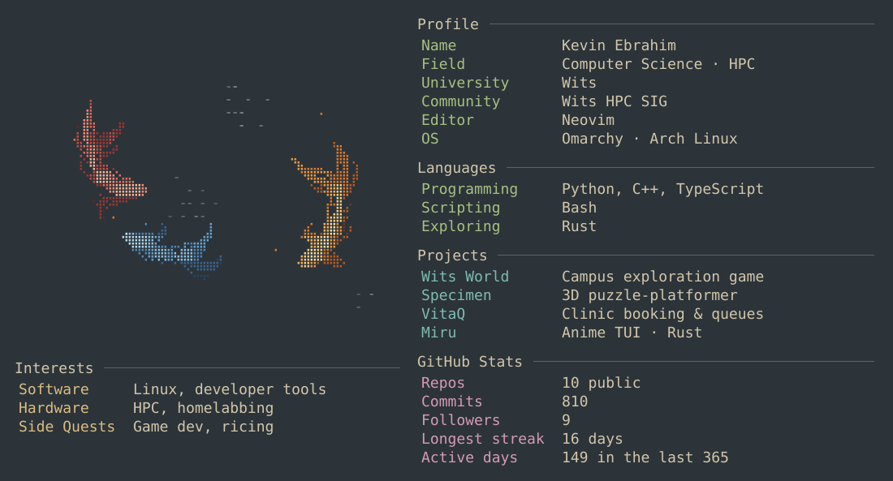

<!doctype html>
<html lang="en">
<meta charset="utf-8">
<meta name="viewport" content="width=device-width, initial-scale=1">
<title>Koi Fetch profile comparison</title>
<style>
  :root { color-scheme: dark; background: #20262b; color: #d3c6aa; }
  body { margin: 1rem; font: 1rem/1.4 monospace; }
  main { display: grid; grid-template-columns: repeat(2, minmax(0, 1fr)); gap: 1rem; }
  figure { margin: 0; }
  figcaption { margin-bottom: .4rem; }
  img { display: block; width: 100%; }
  @media (max-width: 1000px) { main { grid-template-columns: 1fr; } }
</style>
<main>
  <figure><figcaption>Current GIF</figcaption></figure>
  <figure><figcaption>Animated SVG</figcaption></figure>
</main>
</html>
